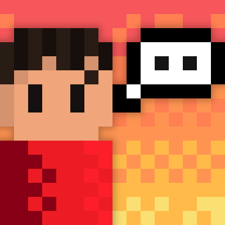
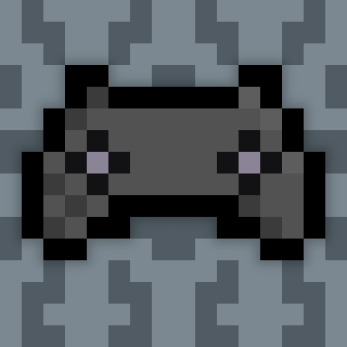
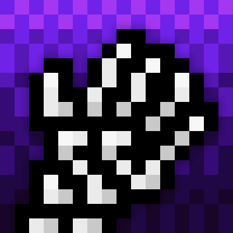
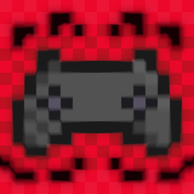
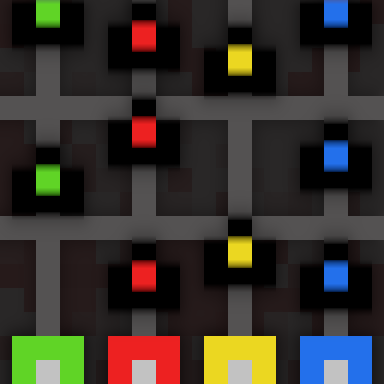

FILTRO DE GAMES ACESSÍVEIS
CONTEXTUALIZAÇÃO
Essa ferramenta foi criada para um projeto do Colégio Presidente Kennedy (uma escola localizada em Santos, SP) com o tema "acessibilidade nos jogos". O objetivo dela é ajudar pessoas com deficiência a procurarem jogos eletrônicos que elas consigam jogar através de um filtro. Pesquisamos os menus de quarenta jogos por opções de acessibilidade e organizamos esses dados em uma planilha. Essas opções são mecanismos que modificam o game para que um jogador com deficiência, seja ela visual, auditiva, motora ou cognitiva, tenha uma experiência mais confortável.
QUAIS SÃO AS OPÇÕES?
Abaixo, há explicações sobre todos os mecanismos de acessibilidade pesquisados. Eles incluem: legendas, remapeamento de botões, modo assistência, opções para daltonismo, desligar vibração, facilitar comandos e segurar ou pressionar botões.
COMO FUNCIONA?
Para usar a ferramenta, desça até o final da página, selecione as opções que você deseja e clique no botão "FILTRAR". Então, uma lista com os jogos que possuem as opções selecionadas irá aparecer.
INSTAGRAM
Confira nossa conta do Instagram para mais detalhes do projeto clicando aqui.
LEGENDAS
O jogo possui legendas que permitem jogadores com deficiências auditivas entenderem diálogos ou outros sons do ambiente.
REMAPEAMENTO DE BOTÕES
O jogo permite jogadores alterarem as ações relacionadas a cada botão, permitindo que jogadores se sintam mais confortáveis com o controle.
MODO ASSISTÊNCIA
O jogo possui qualquer tipo de opção que reduza a dificuldade ou a complexidade de alguns sistemas dele. (Exemplo: reduzir o número de inimigos.)
OPÇÕES PARA DALTONISMO
O jogo possui qualquer tipo de opção que ajude jogadores com daltonismo. (Exemplo: personalizar a cor dos objetivos.)
DESLIGAR VIBRAÇÃO
O jogo permite desligar a vibração do controle, ajudando jogadores com deficiências motoras que são atrapalhados pelo movimento.
FACILITAR COMANDOS
O jogo possui qualquer tipo de opção que reduza a complexidade dos comandos. (Exemplo: assistência de mira.)
SEGURAR OU PRESSIONAR
O jogo possui opções para que o jogador não precise segurar o botão para determinadas ações, mas apenas aperte o botão uma vez, ajudando jogadores com deficiências nas mãos.